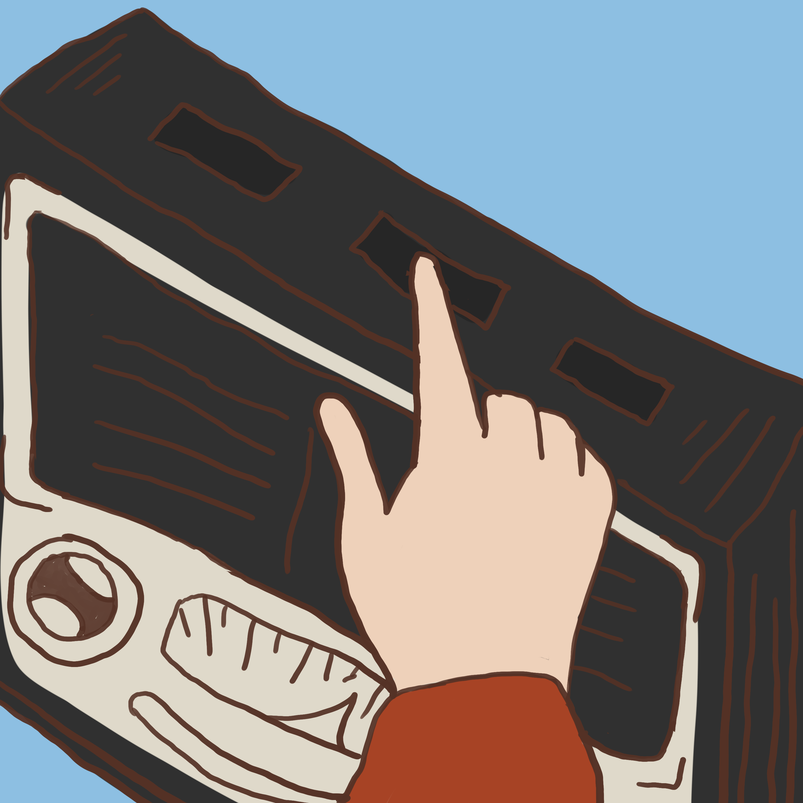
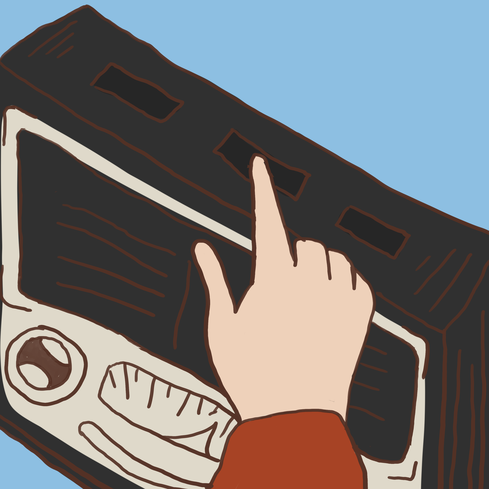

Cuento Infantil
Había una vez un pueblo blanco y soleado llamado Armero, lleno de casas, risas y familias. Esta es la historia del hogar feliz que vivió en el corazón de sus niños, para que su memoria jamás se olvide.


 
